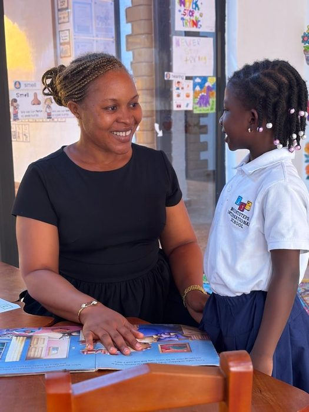

Carrières chez BrightSteps
Grandissez avec nous. Faites la différence.
BrightSteps International School constitue une équipe d'éducateurs passionnés et dévoués qui croient que chaque enfant mérite de se sentir connu, valorisé, soutenu et inspiré. Nous accueillons des professionnels prêts à mettre leur expérience, leurs idées et leur énergie au service d'une communauté scolaire internationale en pleine croissance.
Pourquoi travailler chez BrightSteps ?
Chez BrightSteps, les éducateurs ont l'opportunité de contribuer à un environnement d'apprentissage porteur de sens, bienveillant et collaboratif. Nous valorisons le développement professionnel, la créativité, la pratique réflexive et le travail d'équipe. Nos éducateurs collaborent pour offrir des expériences d'apprentissage par l'investigation stimulantes, qui soutiennent le développement académique, social et émotionnel de chaque enfant.

Les éducateurs que nous recherchons
Nous recherchons des éducateurs qui sont :
- Passionnés par l'enseignement et engagés envers la réussite des élèves
- Bienveillants, patients et attentifs aux besoins de chaque enfant
- Compétents pour créer des expériences d'apprentissage par l'investigation stimulantes
- Curieux, réflexifs et engagés dans un apprentissage professionnel continu
- Collaboratifs et désireux de contribuer à la communauté scolaire élargie
- Respectueux des différentes cultures, langues et perspectives
- Flexibles, ingénieux et prêts à évoluer avec une école internationale en développement
- De solides communicants faisant preuve de professionnalisme et d'intégrité
- Engagés envers la protection et le bien-être de chaque élève
Postes actuellement ouverts
BrightSteps accepte actuellement les candidatures pour les postes suivants :
Exigences pour les postes d'enseignant
Les candidats aux postes d'enseignant doivent avoir :
- Une licence en éducation ou dans un domaine pertinent
- Une qualification d'enseignement reconnue
- Une expérience pertinente en classe
- Une bonne maîtrise de l'anglais parlé et écrit
- Une compréhension de l'apprentissage centré sur l'enfant et par l'investigation
- La capacité à planifier, évaluer, différencier et communiquer efficacement
- Un engagement envers la collaboration et le développement professionnel continu
Exigences pour les postes d'assistant pédagogique
Les candidats aux postes d'assistant pédagogique doivent démontrer :
- Un intérêt sincère pour le travail avec les enfants
- Patience, bienveillance, fiabilité et professionnalisme
- La capacité à soutenir des élèves individuellement ou en petits groupes
- De solides compétences en communication et en travail d'équipe
- Une volonté de travailler sous la direction de l'enseignant titulaire
- Un engagement envers la sécurité, l'inclusion et le bien-être des élèves
Une expérience préalable en milieu scolaire ou de la petite enfance est un atout.
Protection de l'enfance
BrightSteps International School s'engage à protéger et à promouvoir le bien-être des enfants. Tout candidat retenu devra compléter les vérifications d'identité, de qualifications, de références et de casier judiciaire appropriées avant la confirmation de sa nomination. Les candidats doivent être disposés à respecter les politiques de protection de l'enfance de l'école ainsi que son code de conduite professionnel.
Comment postuler
Merci d'envoyer les documents suivants à careers@bischoolci.org :
- Un CV à jour
- Une lettre de motivation
- Des copies de vos qualifications pertinentes
- Les coordonnées de références professionnelles
Merci d'indiquer l'intitulé du poste dans l'objet de votre e-mail. Seuls les candidats présélectionnés seront contactés pour un entretien.
Postuler ici